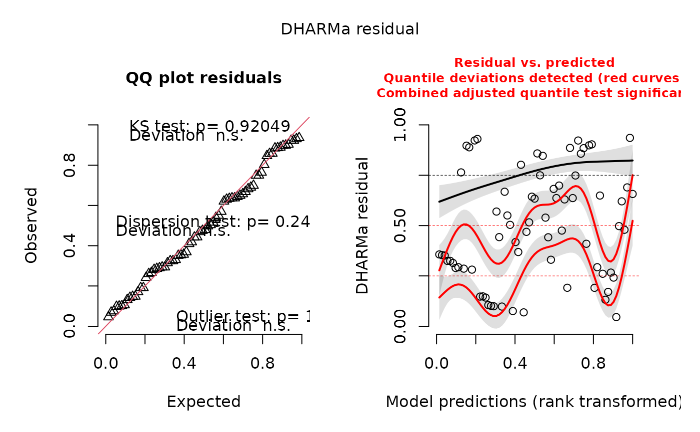

Predictive posterior simulations from an eDITH run
posterior_pred_sim_eDITH.RdThis function performs predictive posterior simulations from a run of the eDITH model (via run_eDITH_BT).
These can be used for diagnostics purposes, in particular to assess scaled (quantile) residuals via the
DHARMa package.
Usage
posterior_pred_sim_eDITH(x, river, nParamSets = 10000, nDrawsPerParamSet = 10,
verbose = FALSE)Arguments
- x
List as produced by
run_eDITH_BT.- river
A
riverobject generated viaaggregate_river.- nParamSets
Number of unique parameter sets sampled from the posterior distribution.
- nDrawsPerParamSet
Number of simulations run per parameter set.
- verbose
Logical. Should updates be printed on the console?
Details
nParamSets can be higher than the number of unique parameter sets in the posterior distribution,
since the sampling of posterior parameter sets is operated with replacement.
Value
A matrix with dimensions length(x$data$ID)-by-nParamSets*nDrawsPerParamSet. Each column is a
predictive posterior simulation. Each row corresponds to a site where eDNA data were observed
(corresponding to the entries of argument data in run_eDITH_BT. Matrix entries are
eDNA values (either concentrations or read numbers) predicted by the model for a given predictive posterior
simulation at a given observational site.
Examples
library(DHARMa)
#> This is DHARMa 0.4.6. For overview type '?DHARMa'. For recent changes, type news(package = 'DHARMa')
data(outSample)
data(wigger)
data(dataC)
pps <- posterior_pred_sim_eDITH(outSample, wigger, nParamSets = 1000)
# reduced nParamSets for illustrative purposes
sim.out <- createDHARMa(pps, dataC$values)
#> No fitted predicted response provided, using the mean of the simulations
plot(sim.out)
